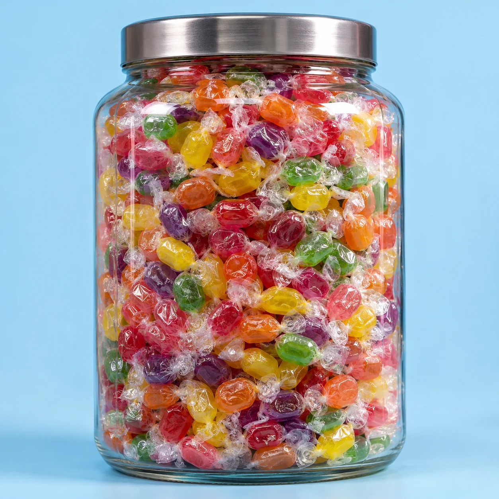

Quantas balas há no pote?
Observe o pote cheio de balas. Você consegue estimar a quantidade sem contá-las?

Imagem ilustrativa: não representa uma quantidade exata de balas. No modo físico, observe o pote real disponível no evento.
O jogo sorteia uma quantidade secreta entre 45 e 150. A fotografia é apenas ilustrativa.
🔒 Configuração do organizador — pote físico
Antes da participação, conte as balas do pote real e informe o total. Configure longe da visão dos visitantes.
Nenhuma quantidade configurada.
A quantidade fica somente na memória desta página. Recarregar a página exige uma nova configuração.
Aguardando configuração do pote físico pelo organizador.
Faça sua estimativa antes de revelar.
Laboratório de Monte Carlo
Explore como a média de várias estimativas pode reduzir o erro aleatório.
Aguardando simulação.
Palpites neste navegador
Pronto para jogar.